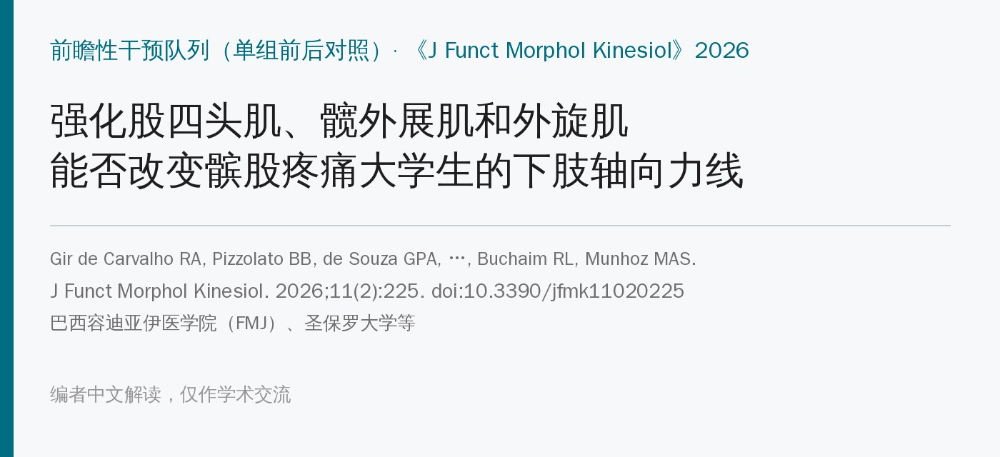
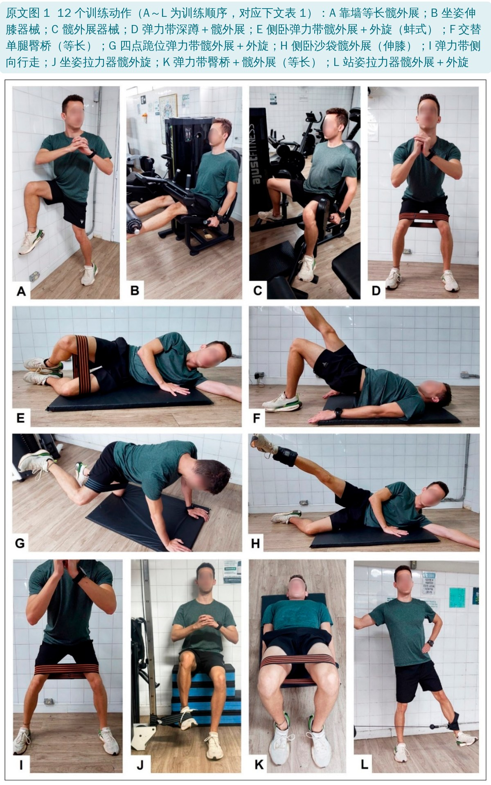
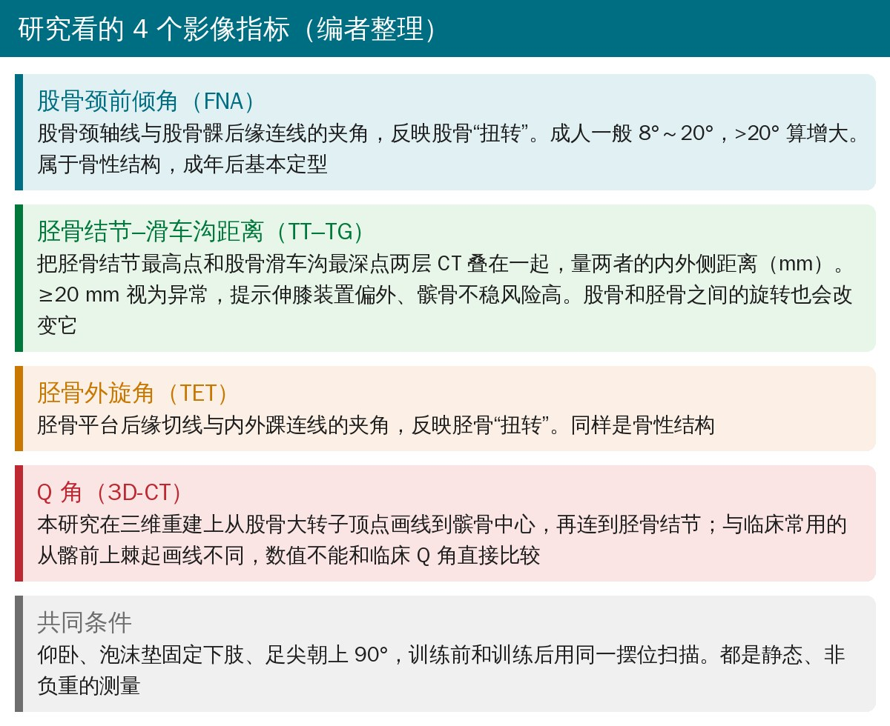
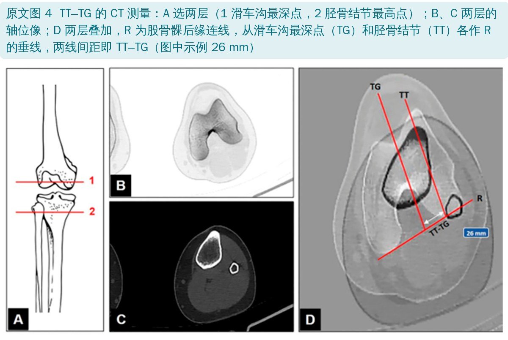
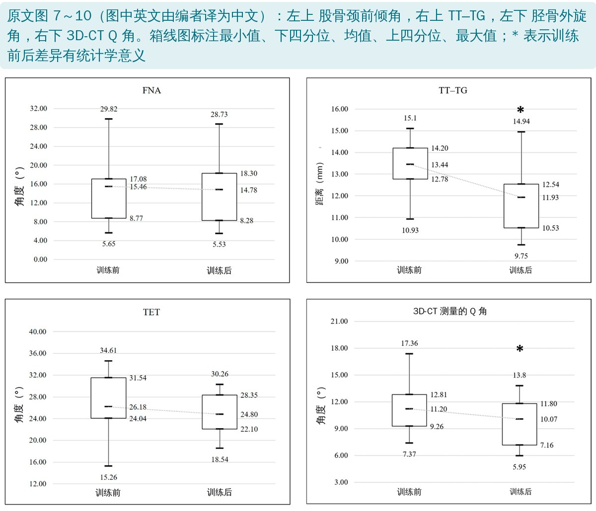
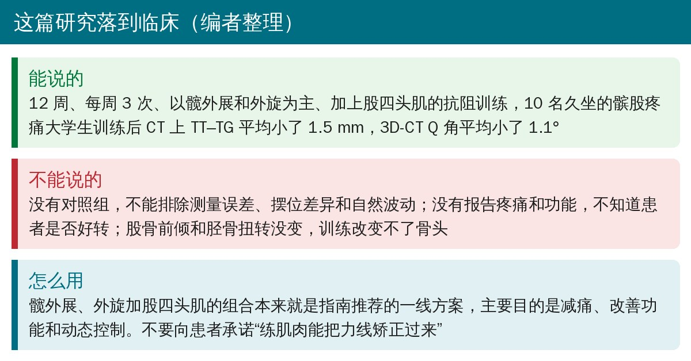

🔖原文信息（编者中文重排）
📚 文献信息
▪ Gir de Carvalho RA, Pizzolato BB, Afonso de Souza GP, Minussi Filho E, Calixto GFL, Galdeano EA, Madureira MMS, Rodrigues WM, da Cunha MR, Machado EG, Cunha FB, Buchaim RL, Munhoz MAS. The Strengthening of Quadriceps, Abductors, and External Rotator Muscles of the Hip to Alter Axial Alignment of the Lower Limbs in University Students with Patellofemoral Pain Syndrome: A Prospective Cohort Study. J Funct Morphol Kinesiol. 2026;11(2):225. doi:10.3390/jfmk11020225
▪ 中文题目：强化股四头肌、髋外展肌和外旋肌以改变髌股疼痛综合征大学生的下肢轴向力线：前瞻性队列研究
▪ 作者单位：巴西容迪亚伊医学院（FMJ）研究生部、圣保罗大学包鲁牙科学院、圣保罗州立大学等
▪ 文章类型：单组前后对照的干预研究（作者称“前瞻性队列”和“预试验”），没有对照组，最终分析 10 人
髌股疼痛综合征（PFPS）是膝前痛最常见的原因之一，年轻女性和运动人群尤其多见。强化股四头肌、髋外展肌和髋外旋肌是指南推荐的一线保守治疗，减痛、改善功能的证据已经比较充分。
大家常用的解释是：髋外展、外旋肌力量不足，股骨就容易内旋、膝外翻，髌骨被拉向外侧，髌股关节压力增大。那么，练这些肌肉之后，下肢的“力线”在影像上真的会变吗？以往研究大多看临床量角器测的 Q 角或者动态外翻，作者想用 CT 同时看四个指标：股骨颈前倾角、TT–TG 距离、胫骨外旋角和 3D-CT 上的 Q 角。
• 对象：向 481 名医学生招募，29 人符合条件入组；19 人中途退出或被剔除（主动退出 7 人、缺课超过 10% 的 10 人、复查 CT 超过 7 天的 2 人），最终分析 10 人（女 6、男 4）
• 入选条件：18～24 岁；下蹲、上楼等日常活动中髌股疼痛 VAS ≥ 5 分；Clarke 征阳性；临床量角器测 Q 角男 > 15°、女 > 20°；过去 12 个月没有规律运动
• 测哪条腿：两侧疼痛相近时选外翻更明显的一侧；外翻相近时选更痛的一侧
• 训练：每周 3 次、共 12 周、36 次，物理治疗师全程在场监督；每次先拉伸 5 分钟、跑步机快走 15 分钟（4～5 km/h）热身，再做 12 个动作，每个 3 组左右，按 1RM 设定负荷、逐步加量
• 评估：训练前和训练结束 7 天内各做一次下肢 CT（层厚 1 mm），同一摆位；二维轴位像测股骨颈前倾角（FNA）、TT–TG、胫骨外旋角（TET），三维重建测 Q 角
• 统计：Shapiro–Wilk 检验正态性，训练前后比较用“两相关样本的方差分析”（两个时间点，相当于配对 t 检验），P < 0.05

🔖原文图 1（只有面板字母，原样引用；动作中文说明由编者添加）
原文表 1 股四头肌、髋外旋肌和髋外展肌训练方案（A～L 为训练顺序）
| 动作 | 收缩方式 | 器材 | 组数 | 次数 / 时间 | 负荷 |
|---|---|---|---|---|---|
| A 靠墙髋外展 | 等长 | 墙 | 4 | 40 s | 自重 |
| B 伸膝 | 等张 | 伸膝器械 | 3 | 20 / 15 / 10 | 60% / 70% / 70% 1RM |
| C 髋外展 | 等张 | 髋外展器械 | 3 | 20 / 15 / 10 | 60% / 70% / 70% 1RM |
| D 深蹲＋髋外展、本体感觉控制 | 等张 | 弹力带 | 3 | 15 | 1.3～1.7 kgf |
| E 髋外展＋外旋（侧卧） | 等张 | 弹力带 | 3 | 20 / 15 / 10 | 0.7～1.0 / 1.3～1.7 / 2.0～2.6 kgf |
| F 交替单腿臀桥 | 等长 | 无 | 6 | 30 s | 自重 |
| G 四点跪位髋外展＋外旋 | 等张 | 弹力带 | 3 | 20 / 15 / 10 | 0.7～1.0 / 1.3～1.7 / 2.0～2.6 kgf |
| H 髋外展（伸膝） | 等张 | 踝部沙袋 | 3 | 15 / 15 / 15 | 2～3 / 3～4 / 4～5 kg |
| I 弹力带侧向行走 | 等张 | 弹力带 | 3 | 20 步 | 0.7～1.0 / 1.3～1.7 / 2.0～2.6 kgf |
| J 坐姿髋外旋 | 等张 | 拉力器低位滑轮 | 3 | 20 / 15 / 10 | 60% / 70% / 70% 1RM |
| K 臀桥＋髋外展本体感觉控制 | 等长 | 弹力带 | 3 | 40 s | 1.3～1.7 kgf |
| L 髋外展＋外旋 | 等张 | 拉力器低位滑轮 | 3 | 20 / 15 / 10 | 60% / 70% / 70% 1RM |
kgf：千克力；1RM：一次最大重复重量。原表中次数和负荷是分三行列出的（如 20 次 60% 1RM、15 次 70%、10 次 70%），原文没说清楚是同一次训练里逐组递增，还是 12 周里分阶段递增。多关节动作之间休息 2～3 分钟。编者翻译
整套方案以髋外展和髋外旋为主（12 个动作里 10 个），股四头肌只有伸膝器械一个动作；既有器械和弹力带的等张练习，也有靠墙外展、臀桥这样的等长练习，基本覆盖了临床常用的髋部强化动作。

🔖四项影像指标说明（编者根据原文整理）

🔖原文图 4（图中只有字母和数字，原样引用；说明由编者添加）
训练前后四项指标（均数 ± 标准差，n = 10）
| 指标 | 训练前 | 训练后 | 平均减少 | P 值 |
|---|---|---|---|---|
| 股骨颈前倾角（°） | 15.46 ± 6.46 | 14.78 ± 8.29 | 0.68 ± 1.26 | 0.0626 |
| TT–TG（mm） | 13.44* | 11.93* | 1.51 ± 0.97 | 0.0001 |
| 胫骨外旋角（°） | 26.18 ± 6.46 | 24.80 ± 4.12 | 1.38 ± 3.36 | 0.2231 |
| 3D-CT Q 角（°） | 11.20* | 10.07* | 1.14 ± 1.52 | 0.0091 |
*正文没给标准差，数值读自原文图 8、图 10 的均值标注。编者根据原文正文和图 7～10 整理

🔖原文图 7～10（图中英文由编者译为中文）
• TT–TG 平均减少 1.51 mm、Q 角平均减少 1.14°，差异有统计学意义
• 股骨颈前倾角和胫骨外旋角也略有减小，但没有统计学意义
• 值得注意：这 10 个人训练前的 TT–TG 最大只有 15.1 mm，全都在正常范围（< 20 mm）；3D-CT Q 角也只有 7.4°～17.4°。也就是说，这些人在 CT 上本来就没有明显的“力线异常”
• 女性训练后 BMI 从 22.12 降到 21.98，男性从 27.2 降到 26.47
• TT–TG 不全是“骨头”：尸体研究显示股骨与胫骨之间每旋转 1°，TT–TG 约变化 0.5 mm。作者认为髋部控制变好、股骨过度内旋减少，可能是 TT–TG 变小的原因
• Q 角和 TT–TG 同时下降，作者认为两者有共同机制：髋部动态稳定性提高、功能性外翻减少
• 骨头没变是意料之中：股骨前倾和胫骨扭转在成年后基本稳定，36 次训练不可能改变骨性结构；但功能上的力线可以在骨头不变的情况下改善
• 可能的机制是神经适应（运动单位募集、协调性改善）和静息肌张力增加，但本研究没有做肌电、肌肉形态等检查来验证
• 作者自己也说：样本小、没有对照组，结论要谨慎，需要大样本随机对照试验确认；也分不清是练髋还是练股四头肌起的作用
• 没有对照组：只有训练前后两次 CT，测量误差、摆位差异和“回归均值”都可能造成 1～2 mm、1～2° 的变化，无法和训练效果区分开
• 变化量很小，测量可靠性没报告：TT–TG 1.5 mm、Q 角 1.1° 已经接近 CT 手工画线的误差范围；原文没报告测量者内、测量者间信度，也没说测量者是否知道片子是训练前还是训练后的
• 静态仰卧 CT 测“功能性力线”：作者用“股骨内旋减少、动态外翻改善”来解释，但 CT 是仰卧、非负重、用泡沫垫固定的，测不到动态控制；更可能反映的是扫描时下肢的摆位（旋转）差异
• 脱落率 66%：29 人入组只分析了 10 人，只分析了坚持下来的人，结果可能偏乐观
• 没有疼痛和功能结局：入组时测了 VAS，结果里却没有报告训练后疼痛和功能变化，看不出 CT 上的变化有没有临床意义
• 人群特殊：久坐的医学生（排除了过去一年有规律运动的人），CT 上力线基本正常，结论不能推广到运动员或真正有结构性力线异常（如 TT–TG ≥ 20 mm）的患者
• 为了研究让年轻人多做一次 CT：每人做两次下肢 CT，这对单组预试验来说辐射代价不小
• 优点：训练方案写得很具体（12 个动作配照片、组数、负荷），物理治疗师全程监督；同一台 CT、同一摆位方案；CT 测量方法配图交代清楚
• 股骨颈前倾角的标准差不可能成立：训练前 SD 6.46°、训练后 8.29°，而差值的 SD 只有 1.26°。按配对数据换算，前后相关系数要大于 1 才可能，数学上不成立，至少有一个数字写错了
• 股骨颈前倾角的 P 值对不上：用文中给的差值 0.68 ± 1.26°、n = 10 算配对 t 检验，t ≈ 1.71，双侧 P ≈ 0.12；文中的 0.0626 恰好接近单侧 P 值。而胫骨外旋角用同样方法算出双侧 P ≈ 0.226，和文中 0.2231 吻合，说明两个指标的 P 值算法不一致
• Q 角和 TT–TG 的 P 值偏小：Q 角 1.14 ± 1.52°、n = 10，算出来 P ≈ 0.042，文中写 0.0091；TT–TG 1.51 ± 0.97 mm 算出 P ≈ 0.0008，文中写 0.0001。结论（有显著性）不变，但显著程度被写大了
• 两个指标的 SD 完全相同：胫骨外旋角训练前 SD 6.46° 与股骨颈前倾角训练前 SD 6.46° 一模一样，可能是抄录错误
• 统计方法前后说法不同：摘要写“重复测量方差分析”，方法写“两相关样本的方差分析”；只有两个时间点时这其实就是配对 t 检验，但摘要的写法容易让人以为有多次测量
• 入选的 Q 角和 CT 上的 Q 角对不上：入选要求临床 Q 角男 > 15°、女 > 20°，但 3D-CT 上 Q 角最大只有 17.4°、平均 11.2°。原因是 CT 上从股骨大转子起画线，而引言定义的 Q 角从髂前上棘起画线，两者不是一回事，原文没有说明
• “三维 CT”说法夸大：讨论称 TT–TG 和 Q 角的变化“只有用高精度三维 CT 才能测出”，但按方法部分，TT–TG 是在二维轴位像上测的，只有 Q 角用了三维重建
• 引用错位：讨论 4.2 节说 TT–TG 增大与伸膝装置外偏、髌骨不稳相关，引用的文献 [36] 却是 ACSM 抗阻训练进阶的立场声明，应该是 [37]（Dejour 1994）
• 研究设计名称混用：标题叫“前瞻性队列研究”，正文又叫“前瞻性干预性队列”和“预试验”；实际是没有对照组的单组前后对照。“缺少对照组”在讨论第二段提到了，却没写进局限性一节
• 该报告的没报告：方法说收集了年龄、VAS，但结果里没有年龄和训练后疼痛；伦理批准是 2020 年 2 月，没写研究实际进行的时间，也没有试验注册号
• 表 1 次数和负荷含义不清：同一动作列了 20 / 15 / 10 次和 60% / 70% / 70% 1RM 三行，没说是组内递增还是分阶段递增；按常规，70% 1RM 一般只能做 10～12 次左右，做 15 次偏重
• 小笔误：图 4 图注写“胫骨结节内侧顶点”（apex of the medial tibial tubercle），胫骨结节并没有“内侧顶点”；图 1 图注 “resistence” 拼错

🔖临床要点（编者整理）
• 训练方案可以直接参考：12 周、每周 3 次、以髋外展和外旋为主、配合股四头肌，监督下进行；表 1 的 12 个动作从等长、器械到弹力带和功能性动作，适合作为髌股疼痛的强化模板
• 别把“力线矫正”当卖点：TT–TG 1.5 mm、Q 角 1°的变化没有对照组、也没有和疼痛改善挂钩，不能据此告诉患者“练肌肉能把骨头的排列练正”；股骨前倾和胫骨扭转确实没变
• 评估疗效看疼痛和功能：临床上仍应以疼痛（VAS/NRS）、功能问卷（如 AKPS/Kujala）和动态控制（单腿下蹲时的膝外翻）作为主要结局
• 如果患者确实有结构性力线异常（TT–TG ≥ 20 mm、股骨前倾或胫骨扭转明显增大），保守训练仍可先做，但要知道它改变不了骨性结构，症状顽固时需要转诊评估
欢迎关注骨科康复小黄公众号，获取更多物理治疗的专业知识！
📄参考文献：
Gir de Carvalho RA, Pizzolato BB, Afonso de Souza GP, et al. The Strengthening of Quadriceps, Abductors, and External Rotator Muscles of the Hip to Alter Axial Alignment of the Lower Limbs in University Students with Patellofemoral Pain Syndrome: A Prospective Cohort Study. J Funct Morphol Kinesiol. 2026;11(2):225. doi:10.3390/jfmk11020225
原文以 CC BY 4.0 协议开放获取（© 2026 by the authors，MDPI 出版）。本文为学术交流中文解读：原文图 1、图 4 原样引用；原文图 7～10 中的英文由编者译为中文并拼成一张图；表格为编者中文翻译；首图、指标说明卡和临床要点卡为编者根据原文整理；文中重新计算的 P 值为编者根据原文给出的均数和标准差推算。仅供学习交流，如有侵权请联系删除。